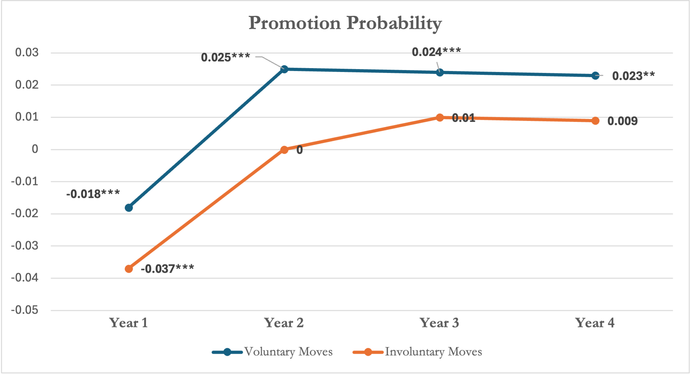
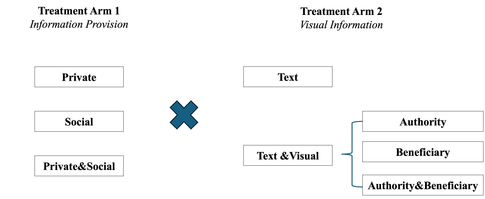
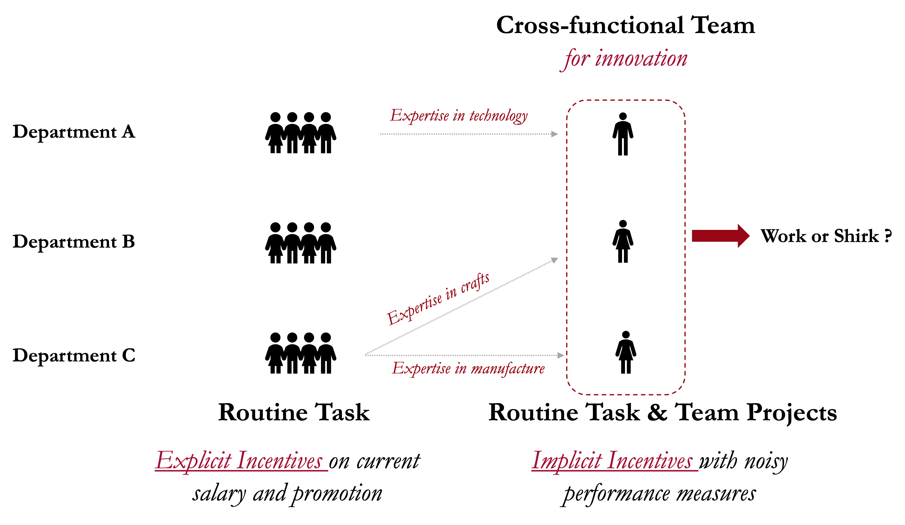
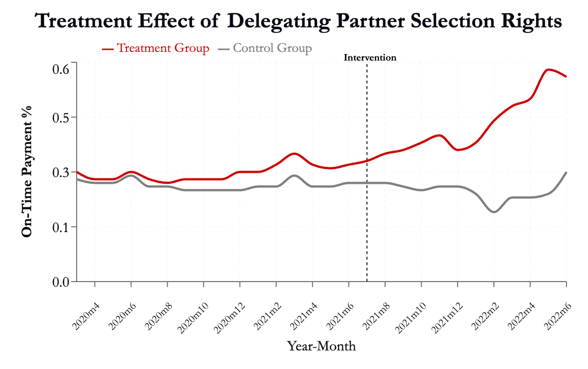
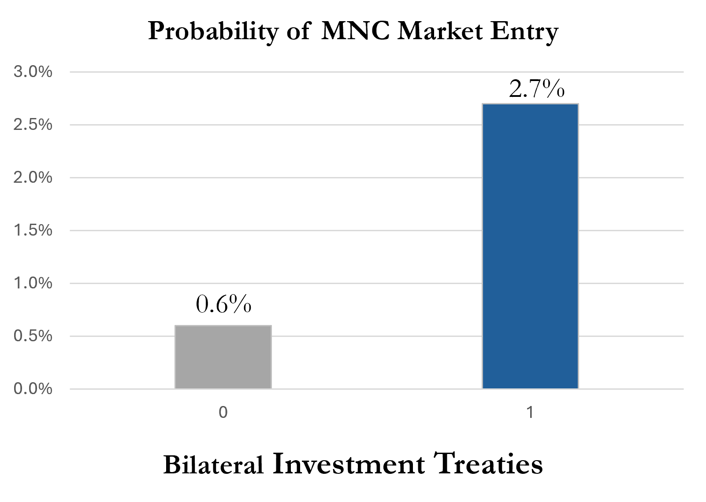

Curriculum Vitae
Last updated March 20, 2026
Download PDF
Ph.D. Candidate in Accounting & Management
I study how employee mobility within internal labor markets and management control systems shape individual and team performance. I am also interested in how to effectively present information to facilitate decision making.
I use a wide set of research methods including field experiments, surveys, and archival analyses both within a firm and in broad-sample settings. My job market paper examines whether internal mobility enhances the match quality between employees and jobs.
Sports junkie. Padel, basketball, soccer...if there's a game, I'm in. Also a foodie but picky.
Internal labor markets, management control, and information design
This study examines voluntary, employee-initiated lateral moves as a mechanism for improving employee-job match quality. Using 11-year personnel data from an S&P 500 company, I find that employees undertaking such moves are associated with significantly higher long-term promotion rates, lower turnover, and improved performance ratings compared to matched employees who remain in their roles. Conversely, involuntary, firm-dictated lateral moves fail to generate these benefits, suggesting that voluntary moves enable employees and local managers to exploit private information for optimal job matching. The benefits of voluntary moves are particularly pronounced for employees facing high information asymmetry with their jobs, limited promotion opportunities, or substantial changes in job contents. However, lateral moves entail short-term transition costs, including temporary performance declines, reduced role clarity, and potential misfit with the new job. This research contributes to the accounting and economics literature by highlighting a dynamic, post-hire mechanism for improving employee-job match quality. The findings demonstrate the strategic value of lateral mobility in workforce optimization, particularly relevant for flat organizational structures and periods of hiring constraints when firms must maximize the productivity of existing employees rather than rely on external recruitment.

A growing literature in accounting and economics explores information provision as a driver of behaviors that benefit society. We present a Registration-based Editorial Process (REP) proposal of a field experiment in a public health setting to examine whether the provision of information on private benefits, social benefits, or both best motivates prosocial behavior. Although information on private and social benefits can each influence social responsibility, theories of limited attention and information processing suggest that providing both types of information together may not be best. In light of accounting research on the use of images to alleviate information processing constraints, we also examine whether images moderate the effect of our textual information interventions. Our REP proposal is a randomized controlled trial in collaboration with the government of El Salvador to prompt vaccination uptake. The empirical design extends the accounting literature on the role of information content and formatting to increase prosocial behavior.

This study examines how participation in temporary cross-functional teams affects employees' performance in their primary departmental responsibilities. Employees in these teams juggle dual responsibilities that often conflict, balancing explicitly incentivized departmental tasks against implicitly rewarded team objectives. Using a staggered difference-in-differences design with field data from a large manufacturing firm, I find that employees' routine task performance significantly deteriorates during cross-functional team assignments. This performance decline is attenuated for employees with greater cognitive capacity and stronger career concerns, with performance gradually recovering as employees adapt. While individual employees make more mistakes during team participation, they are more likely to achieve higher professional and vocational certifications post-assignment. At the firm level, despite an increase in errors, the firm experiences greater operational efficiency and stability after implementing such teams. These findings extend multitasking theories and offer insights for organizations balancing innovation with effective performance management.

Recent empirical research has documented that overprovision of information harms performance. Yet, evidence on how to design performance reports in a way that accounts for the limited cognitive capacity of the user is still scant. Using a field experiment in online professional education, we test whether delegating decision rights over performance measures to report recipients improves their performance. Our analysis yields the following observations. First, recipients perform better when we restrict reports to a subset of information, rather than providing that same information in a more comprehensive report. Second, recipients granted decision rights over performance measures exhibit better performance than those without such rights. Third, when granted decision rights, recipients frequently select reports containing only a subset of available information—a choice that would be suboptimal from a Bayesian decision-maker's perspective despite all information being freely accessible. In addition, the positive effect of delegation is more pronounced among recipients who are more susceptible to information overload. These results suggest that recipients wield the choice over their report design in a manner that mitigates, rather than exacerbates, information overload. Our study offers initial evidence on the benefits of user-driven customization of performance reports.

In firms using high-powered commission schemes, the primary constraint on performance is often not effort, but operational friction and coordination bottlenecks. We investigate whether delegating partner selection rights serves as a more effective control mechanism than marginal increases in financial rewards in such settings. We conducted a large-scale field experiment at a home decoration firm involving 63 stores and 20,569 projects, where we randomly assigned stores to a Control group, a Bonus Only group, or a Bonus and Decision Rights group. We focus on customer referrals as our primary outcome because these high-value transactions depend critically on seamless dyadic coordination. We find that financial incentives alone fail to generate statistically significant gains in referral sales. In contrast, combining the incentive with decision rights generates a 42% relative increase. Mechanism tests reveal that delegation functions as a structural efficiency lever: agents use specific knowledge to sort into more compatible teams, thereby reducing project cycle times and increasing customer satisfaction. Finally, we document a “state-contingent” value to decentralization. The performance premium of decision rights is concentrated in periods of high operational load, precisely when the central allocator becomes a binding bottleneck. These findings demonstrate that in capacity-constrained environments, decision rights are a critical complement to financial incentives.

This study investigates how international agreements (BITs and PTAs) influence where multinational corporations choose to invest. While previous research focused on domestic institutions, we examine how these international agreements interact with host country uncertainty, home country institutional weaknesses, and companies' existing international presence. Analyzing over 13,000 market entries by 1,129 multinational companies across 73 countries (2005–2017), we found these agreements significantly increase investment likelihood. This effect is stronger when host countries have uncertain institutions or when companies come from countries with weak formal institutions, but weaker for highly internationalized companies. Our findings enhance institutional theory by showing how international agreements interact with various institutional factors, providing practical insights for multinational managers and policymakers navigating complex global environments.
